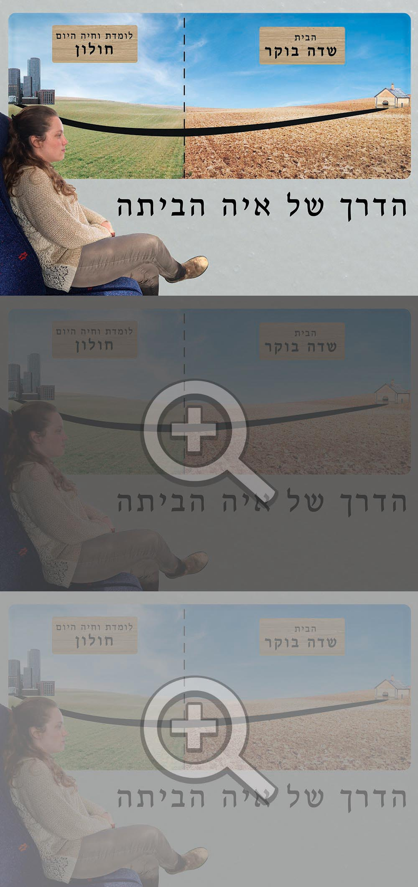

"הדרך של איה הביתה"
הסבר על העבודה
"כשהנוף משתנה, אני יודעת שאני כמעט בבית"
העבודה היא אינפוגרפיקה שנוצרה במטרה להעביר משהו ייחודי על איה.
במקור איה מגיעה משדה בוקר, והנסיעות הפכו להיות חלק משמעותי בחיים שלה.
בחרתי לייצג את השינוי שהנוף עובר בעת הנסיעה בחזרה הביתה, בהתבסס על מה שאיה אמרה בראיון הראשון:
כשהנוף משתנה מירוק למדברי, זה סימן שהבית קרוב.
הרקע לדימוי הוא בקרון רכבת שהנוף משתנה בחלון. החלק של שדה בוקר בייצוג גדול יותר
גם כדי שהמיקוד יגיע אליו כי זה כיוון הנסיעה שלה וגם כי הוא חלק יותר גדול מהחיים שלה.